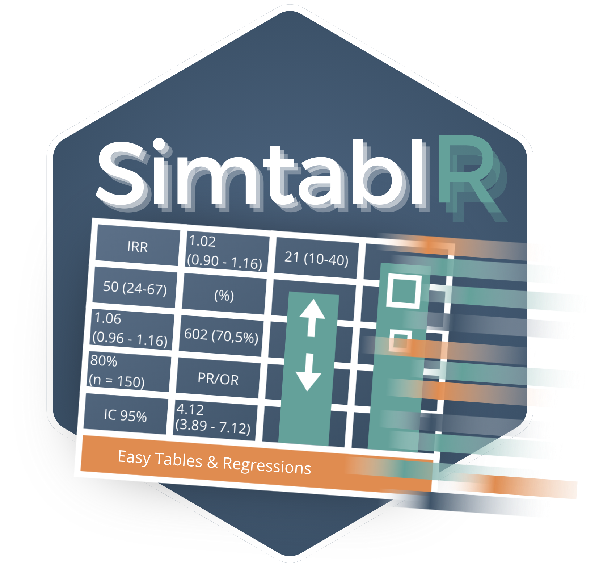

Publication-Ready Epidemiology, Fast and Reproducible
SimtablR turns epidemiological data into publication-ready tables and reports without separating the numbers from the decisions that produced them.
In epidemiological and clinical research, analysts often transition from GUI-based software or command-line packages such as Stata, SAS, SPSS, or Epi Info. In R, producing standard baseline tables, 2x2 contingency tables with risk ratios, multivariable regressions, or diagnostic evaluations often requires combining multiple fragmented packages, manually recoding dummy factors, calculating confidence intervals by hand, and re-pasting tables into Word processors.
SimtablR eliminates this friction. It provides concise, direct functions with sensible epidemiological defaults, while maintaining an explicit specification layer for formal peer review and reproduction.
Key Architectural Commitments
-
Study-Design Aware: Resolves epidemiologically valid effect measures (Risk Ratio, Odds Ratio, Prevalence Ratio, Incidence-Rate Ratio, Hazard Ratio) based on study design (
design = "cohort","case_control", or"cross_sectional"). -
Separation of Evidence from Presentation: Statistical engines calculate raw, unrounded values into
$data. Display formatting, rounding, journal conventions (NEJM, Lancet, JAMA), and table rendering (gt,flextable, Word, Excel) occur only at the presentation boundary. - Welcoming to Learners & Fast for Experts: Direct functions accept unquoted variable names, character strings, or tidyselect expressions. No boilerplate or data reshaping is required.
-
Non-Blocking Methodological Guidance: The built-in advice engine (
advise()) checks for sparse cells, unmeasured confounding, and assumption violations, guiding analysts without interrupting computational workflows. -
Verb Closure: Grammar verbs (
stratify(),adjust(),test(),missingness(),set_summary(),style()) can be piped directly into computed results, automatically re-evaluating the specification.
Installation
Install the released version from CRAN:
install.packages("SimtablR")Or install the development version from GitHub:
# install.packages("remotes")
remotes::install_github("MatheusTG-14/SimtablR")Core Functions & Key Parameters
1. Multi-Variable Baseline Cohort Tables: table1()
table1() constructs descriptive demographic and clinical baseline tables grouped by an exposure, treatment, or clinical outcome.
table1(data, vars, by = NULL, summary = "auto", test = FALSE, labels = NULL, ...)Key Parameters:
-
summary: Continuous variable summary policy.-
"auto"(default): Computes skewness to automatically chooseMean (SD)for symmetric variables orMedian (IQR)for skewed distributions. -
"mean": Forces Mean (SD) across all continuous metrics. -
"median": Forces Median (IQR) across all continuous metrics.
-
-
by: Grouping variable (bare name or string). Produces stratified columns alongside sample denominators. -
test: Logical or test specification. Whentest = TRUE, performs hypothesis tests (t-test, Wilcoxon, ANOVA, Kruskal-Wallis, N-1 , or Fisher’s exact test). -
labels: Named character vector mapping raw variable names to human-readable labels and measurement units. -
missingness: By default, reports explicit counts and percentages of missing observations (N Missing (%)) to maintain clinical denominator transparency. -
test(smd = TRUE): Via verb closure, Standardized Mean Differences (SMDs) can be appended to any baseline table for observational propensity or balance assessments.
# Example: Multi-variable description with automated summaries, testing, and SMDs
tab_baseline <- table1(
epitabl,
c(age, sex, bmi, smoking, hypertension, diabetes, renal_impairment, presentation_hours),
by = adjudicated_acs,
test = TRUE,
labels = c(
age = "Age (years)",
bmi = "Body Mass Index (kg/m²)",
presentation_hours = "Time to ED Presentation (hours)"
)
) |>
test(smd = TRUE)
tab_baseline2. Focused Contingency & 2x2 Tables: tb()
tb() produces focused bivariate frequency tables, cross-tabulations, hypothesis tests, and epidemiological association measures.
tb(data, row_var, col_var, flags = ..., design = ..., strat = ..., ref = ...)Key Parameters & Terse Flags:
-
flags: Concise string flags defining cell contents and effect measures:- Percentage denominators:
"row"(row %),"col"(column %),"cell"(total table %). - Effect measures:
"rr"(Relative Risk / Risk Ratio),"or"(Odds Ratio),"pr"(Prevalence Ratio). - Inference:
"p"(adds p-value),"miss"(displays missing categories).
- Percentage denominators:
-
design: Epidemiological study design ("cohort","case_control","cross_sectional"). When specified without explicit measure flags, SimtablR automatically resolves the correct effect measure (e.g., RR for cohorts, OR for case-control). -
strat: Stratifying variable. Calculates stratum-specific effects, tests for homogeneity of odds/risk ratios across strata, and computes Greenland-Robins Mantel-Haenszel pooled estimates. -
ref: Overrides the reference level for exposure or outcome categories without requiringrelevel()data transformations.
# Example 2.1: Exposure-stratified cohort 2x2 table with Risk Ratio
tb(epitabl, renal_impairment, adjudicated_acs, flags = c("row", "rr"), design = "cohort")
# Example 2.2: Stratified analysis with Mantel-Haenszel pooling across sex
tb(epitabl, renal_impairment, adjudicated_acs, strat = sex, flags = c("row", "or"))Multiple bivariate tables can also be stacked into a single consolidated summary using standard rbind():
tab1 <- tb(epitabl, smoking, adjudicated_acs, flags = c("row", "or"))
tab2 <- tb(epitabl, diabetes, adjudicated_acs, flags = c("row", "or"))
rbind(tab1, tab2)3. Multivariable Regression & Rare-Event Modeling: regtab()
regtab() fits generalized linear models (GLMs) across one or multiple outcomes over a shared predictor specification, reporting adjusted effect measures with confidence intervals.
Key Parameters:
-
outcomes: Character vector of outcome variables. Specifying multiple outcomes fits separate models simultaneously and binds them into a consolidated publication table. -
predictors: Two-sided formula (e.g.,~ age + sex + smoking + renal_impairment). -
family: Standard GLM error distribution and link function (binomial("logit"),gaussian(),poisson(),quasipoisson()). -
robust: Robust sandwich covariance estimation. Defaults toTRUE(HC0 heteroscedasticity-consistent variance). Supports"HC3"for small samples, orFALSEfor classical model-based variance. -
method: Estimation method.-
"glm"(default): Standard maximum likelihood. -
"firth": Firth’s penalized likelihood regression (vialogistf), eliminating small-sample bias and handling complete separation in rare clinical exposures.
-
# Example 3.1: Multivariable logistic regression with HC0 robust standard errors
fit_glm <- regtab(
epitabl,
outcomes = "adjudicated_acs",
predictors = ~ age + sex + smoking + hypertension + diabetes + renal_impairment,
family = binomial("logit"),
robust = TRUE
)
fit_glm
# Example 3.2: Firth penalized likelihood for rare exposure (maintenance dialysis)
fit_firth <- regtab(
epitabl,
outcomes = "adjudicated_acs",
predictors = ~ age + sex + dialysis,
family = binomial("logit"),
method = "firth"
)
fit_firth4. Time-to-Event Survival Analysis: survtab()
survtab() fits Cox proportional hazards models for right-censored time-to-event outcomes, reporting hazard ratios (HR), confidence intervals, and model diagnostics.
survtab(data, time, event, predictors, robust = FALSE, ...)Key Parameters:
-
time: Follow-up observation time (e.g., days to event or censoring). -
event: Binary event indicator ("Yes"/"No",1/0, orTRUE/FALSE). -
predictors: Formula defining covariates. - Diagnostics: Automatically computes Schoenfeld residual tests (
cox.zph) to verify the proportional hazards assumption. - Graphical output: Forest plots of estimated hazard ratios are generated directly using
autoplot().
# Example: 1-Year MACE time-to-event model
fit_cox <- survtab(
epitabl,
time = mace_time_days,
event = mace_event,
predictors = ~ age + sex + smoking + renal_impairment
)
fit_cox5. Clinical Diagnostic Accuracy & ROC Discrimination: diag_test() & roc()
SimtablR provides dedicated tools for diagnostic evaluations aligned with STARD reporting guidelines.
Binary Diagnostic Tests: diag_test()
Evaluates an index test against a reference standard, generating 2x2 contingency counts, Sensitivity, Specificity, Positive Predictive Value (PPV), Negative Predictive Value (NPV), Positive/Negative Likelihood Ratios (LR+, LR-), and Diagnostic Odds Ratios (DOR).
Continuous Biomarker Discrimination: roc()
Calculates empirical Area Under the ROC Curve (AUC) with DeLong 95% confidence intervals, optimal decision thresholds via Youden’s J statistic (cutpoint = "youden"), and publication-ready ROC curves.
roc_curve <- roc(
substudy,
marker = poc_hstn_value,
outcome = adjudicated_acs,
positive = "Yes",
cutpoint = "youden"
)
roc_curve6. The Declarative Grammar & Composite Reports: simtab() & simtablr()
For structured research pipelines, the grammar decouples planning from computation:
# 1. Build an inert specification (the plan)
plan <- simtab(epitabl) |>
describe(c(age, sex, bmi, renal_impairment)) |>
stratify(adjudicated_acs) |>
set_summary("auto") |>
missingness(display = TRUE) |>
overall(TRUE) |>
test("auto")
# 2. Evaluate when ready
res <- evaluate(plan)Composite Manuscript Reports with simtablr()
Automatically couples a descriptive Table 1 and an inferential Table 2 into a single report object:
report <- simtablr(
epitabl,
outcome = adjudicated_acs,
exposure = renal_impairment,
vars = c(age, sex, smoking, hypertension, diabetes),
adjust = c(age, sex, smoking),
design = "cohort"
)
# Access individual tables
report$table1
report$table27. Methodological Audit, Reviewer Analyses & Export
Non-Blocking Methodological Audit: advise()
Evaluates result evidence against epidemiological rules (sparsity, separation, unadjusted confounding, missingness):
advise(fit_glm, audit = TRUE)Automated Methods Section Prose: as_methods()
Produces concise, ready-to-paste Methods text detailing statistical tests, degrees of freedom, and software implementations:
as_methods(tab_baseline)Sensitivity to Unmeasured Confounding: e_value()
Calculates the minimum strength of unmeasured confounding required to explain away an observed association:
e_value(report$table2)Publication Export
SimtablR integrates with gt for interactive HTML and flextable for Microsoft Word, PowerPoint, and Excel export:
# Interactive HTML table
as_gt(tab_baseline)
# Microsoft Word document export
export_docx(report, path = "Table1_and_Table2.docx", methods = TRUE)
# Microsoft Excel workbook export
export_xlsx(tab_baseline, path = "Table1.xlsx")Function Summary Matrix
| Task | Function | Primary Arguments | Output / Return |
|---|---|---|---|
| Multi-variable Baseline Table | table1() |
vars, by, summary, test, labels
|
simtab_result (descriptive) |
| Focused Bivariate & 2x2 Tables | tb() |
row_var, col_var, flags, design, strat
|
simtab_result (bivariate) |
| Multivariable GLM & Firth | regtab() |
outcomes, predictors, family, robust, method
|
simtab_result (glm) |
| Cox Proportional Hazards | survtab() |
time, event, predictors, robust
|
simtab_result (cox) |
| Binary Diagnostic Accuracy | diag_test() |
test, ref, positive, test_positive, ci
|
simtab_result (accuracy) |
| Biomarker ROC Discrimination | roc() |
marker, outcome, positive, cutpoint
|
simtab_result (roc) |
| Declarative Analysis Plan | simtab() |
data, grammar verbs (describe, stratify, …) |
simtab_spec (inert plan) |
| Composite Table 1 + Table 2 | simtablr() |
outcome, exposure, vars, adjust, design
|
simtab_report |
| Methodological Rules & Audit | advise() |
result, audit = TRUE
|
simtab_audit |
| Manuscript Methods Prose | as_methods() |
result or report
|
Formatted character / prose |
| Sensitivity & Unmeasured Bias | e_value() |
result |
E-value point estimate & CI |
| Participant Accountability Flow | flow() |
data, exclusion steps |
simtab_flow |
| Export to Word / Excel / HTML | export_docx() |
object, path, methods = TRUE
|
Formatted Office document |
In-Depth Documentation & Guides
Explore the comprehensive four-part workflow guides based on the epitabl acute coronary syndrome teaching cohort:
- table1() & tb(): Cohort Baseline Characteristics and 2x2 Tables — Patient presentation, skewness detection, missing denominators, and Mantel-Haenszel stratification.
- diag_test() & roc(): Diagnostic Accuracy and Biomarker Discrimination — Acute point-of-care hs-cTn evaluation, confusion matrices, DeLong intervals, and Youden threshold optimization.
- regtab() & survtab(): Multivariable Modeling and Longitudinal Outcomes — Adjusted odds ratios, robust sandwich covariance, Firth penalized likelihood for rare exposures, and 1-year MACE Cox survival.
- simtab Grammar, Reviewer Analyses, and Export: From Protocol to Manuscript — Specifications, verb closure, automated methods text, E-values, STROBE/STARD checklists, and Office export.
Citation & License
To cite SimtablR in scientific manuscripts and protocols:
citation("SimtablR")Released under the MIT License.